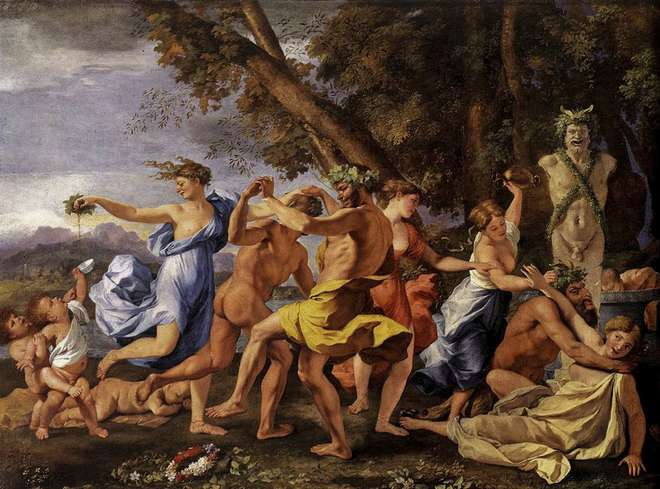
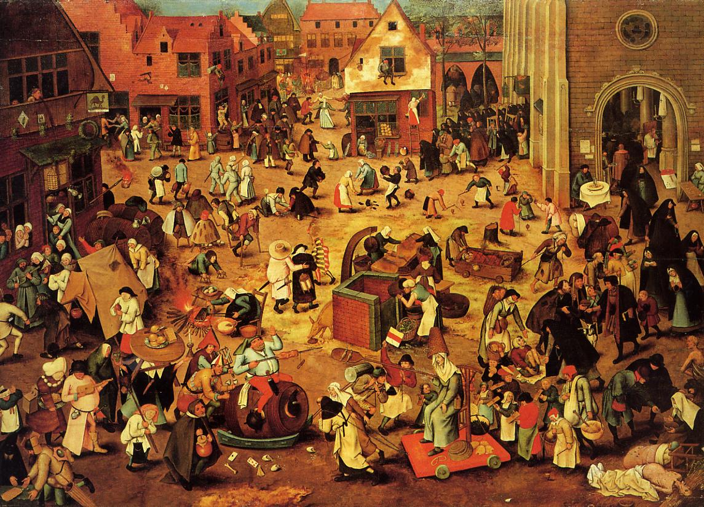
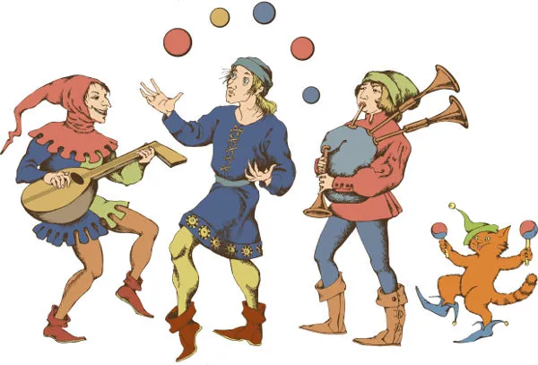
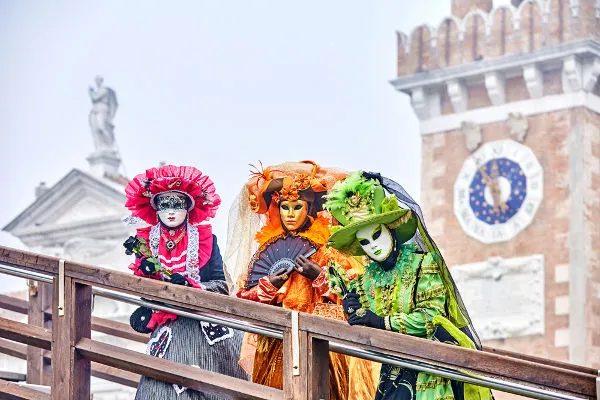

Origem do Carnaval:
O Carnaval não é uma invenção brasileira, pois sua origem remonta à Antiguidade.
Na Babilônia, duas festas possivelmente originaram o que conhecemos como Carnaval. As Sacéias eram uma
celebração em que um prisioneiro assumia, durante alguns dias, a figura do rei, vestindo-se como ele,
alimentando-se da mesma forma e dormindo com suas esposas. Ao final, o prisioneiro era chicoteado e depois enforcado ou empalado.
rito era realizado pelo rei no período próximo ao equinócio da primavera, um momento de comemoração do
ano novo na Mesopotâmia. O ritual ocorria no templo de Marduk (um dos primeiros deuses mesopotâmicos), onde
o rei perdia seus emblemas de poder e era surrado na frente da estátua de Marduk. Essa humilhação servia
para demonstrar a submissão do rei à divindade. Em seguida, ele novamente assumia o trono.
O que havia de comum nas duas festas e que está ligado ao Carnaval era o caráter de subversão de papéis sociais: a transformação temporária do prisioneiro em rei e a humilhação do rei frente ao seu deus.
Possivelmente a subversão de papéis sociais no Carnaval, como os homens vestirem-se de mulheres e outras práticas semelhantes, é associável a essa tradição mesopotâmica.
A associação entre o Carnaval e as orgias pode ainda relacionar-se com as festas de origem greco-romana,
como os bacanais (festas dionisíacas, para os gregos). Seriam eles dedicados ao deus do vinho, Baco (ou
Dionísio, para os gregos), marcados pela embriaguez e pela entrega aos prazeres da carne.
Havia ainda, em Roma, a Saturnália e a Lupercália. A primeira ocorria no solstício de inverno, em dezembro,
e a segunda, em fevereiro, que seria o mês das divindades infernais, mas também das purificações. Tais
festas duravam dias, com comidas, bebidas e danças. Os papéis sociais também eram invertidos
temporariamente, com os escravos colocando-se nos locais de seus senhores, e estes colocando-se no papel de
escravos.

Cristianismo e Carnaval:
A palavra Carnaval é originária do latim, carnis levale, cujo significado é “retirar a carne”. Esse sentido está relacionado ao jejum que deveria ser realizado durante a Quaresma e também ao controle dos prazeres mundanos. Isso demonstra uma tentativa da Igreja Católica de controlar os desejos dos fiéis.
As festas citadas eram, naturalmente, celebrações pagãs e eram extremamente populares. Com o fortalecimento
de seu poder, a Igreja não via com bons olhos essas celebrações nas quais as pessoas entregavam-se aos
prazeres mundanos. Nessa concepção do cristianismo, havia a crítica da inversão das posições sociais, pois,
para a Igreja, ao inverter os papéis de cada um na sociedade, invertia-se também a relação entre Deus e o
demônio.
A Igreja Católica, então, procurou ressignificá-las dando-lhes um senso mais cristão. Durante a Alta Idade
Média, foi criada a Quaresma — período de 40 dias antes da Páscoa caracterizado pelo jejum. Tempos depois,
as festividades realizadas pelo povo foram concentradas nesse período e nomeadas carnis levale, daí surgindo o nome Carnaval.

A Igreja pretendia, dessa forma, manter uma data para as pessoas cometerem seus excessos, antes do período
da severidade religiosa. Nesse momento, o Carnaval estendia-se durante várias semanas, entre o Natal e a
Páscoa.
Carnaval na Europa Medieval e Moderna:
O Carnaval medieval era marcado por festas, banquetes e muitas brincadeiras.

Durante os carnavais medievais, por volta do século XI, no período fértil para a agricultura, homens jovens
que se fantasiavam de mulheres saíam às ruas e aos campos durante algumas noites. Diziam-se habitantes da
fronteira do mundo dos vivos e dos mortos e invadiam os domicílios, com a aceitação dos que lá habitavam,
fartando-se com comidas e bebidas, e também com os beijos das jovens das casas.
Durante o Renascimento, nas cidades italianas, surgia a commedia dell'arte, teatros improvisados cuja
popularidade ocorreu até o século XVIII. Em Florença, canções foram criadas para acompanhar os desfiles, que
contavam ainda com carros decorados, os trionfi. Em Roma e Veneza, os participantes usavam a bauta, uma capa
com capuz negro que encobria ombros e cabeça, além de chapéus de três pontas e uma máscara branca.
Era comum na Itália renascentista a realização de bailes de máscara durante o Carnaval.

A lógica que regia as festas da Antiguidade era a mesma para o Carnaval na Europa da Idade Média e Moderna: o mundo de cabeça para baixo. Sendo assim, tratava-se de um período de inversão proposital da ordem, portanto, as restrições das vidas das pessoas eram abolidas, e os papéis que existiam naquela sociedade, invertidos.
A partir do século XVI, houve iniciativas de impor o controle sobre as festas carnavalescas no continente. Essa tentativa de silenciamento foi uma reação aos conflitos religiosos que atingiam a Europa naquele período, mas também pode ser explicada como forma de impor controle social. Outra explicação pode ser o conservadorismo vigente que buscava demonizar as festas populares.